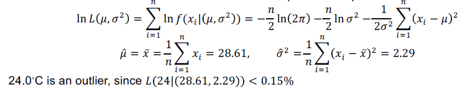
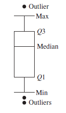

Outliers
An outlier is a data object that deviates significantly from the rest of the objects, suspected of being generated by a different mechanism.
Basic Concepts
Outlier Detection and Novelty Detection
- monitoring a social media web site where new content is incoming, novelty detection may identify new topics and trends in a timely manner, novel topics may initially appear as outliers
- outlier detection and novelty detection share some similarity in modeling and detection methods
- main difference: in novelty detection, once new topics are confirmed, they are usually incorporated into the model of normal behavior so that follow-up instances are not treated as outliers anymore
Detecting Global Outliers
- find an appropriate measurement of deviation with respect to the application in question
- important in many applications
- intrusion detection in computer networks
- trading transaction auditing systems
Contextual vs. Behavioral Attributes
- in contextual outlier detection, the attributes of the data objects in question are divided into two groups
- contextual attributes
- behavioral attribues
- the contextual attributes of a data object define the object’s context
- example: temperature contextual attributes may be date and location
- the behavioral attributes define the object’s characteristics, and are used to evaluate whether the object is an outlier in the context to which it belongs
- example: temperature behavioral attributes may be temperature, humidity, and pressure
- Whether a data object is a contextual outlier depends on not only the behavioral attributes but also the contextual attributes
Contextual, Global, and Local Outliers
- global outlier detection can be regarded as a special case of contextual outlier detection, where the set of contextual attributes is empty - global outlier detection uses the whole dataset as the context.
- contextual outlier analysis provideds flexibility to users in that one can examine outliers in different contexts, which can be highly desirable in many applications
- the quality of contextual outlier detection in an application depends on the meaningfulness of the contextual attributes, in addition to the measurement of the deviation of an object to the majority in the space of behavior attributes
- applications of collective outliers:
- intrusion detection, if several computers are sending denial-of-service packages to each other, this could indicate an attack
- a large set of transactions of the same stock between a small number of parties in a short period could indicate market manipulation
Comparison Between Multiple Types of Outliers
- a dataset can have many types of outliers
- an object may belong to multiple types of outliers
- different applications or purposes could require detection of different types of outliers
- global outlier detection is the simplest
- context outlier detection requires background information
- collective outlier detection requires background information to model the relationship among objects to find groups of outliers
Challenges of Outlier Detection
- modeling normal objects and outliers effectively
- the border between data normality and abnormality (outliers) is often not clear-cut
- application-specific outlier detection
- the relationship among objects highly depends on applications
- handling noise in outlier detection
- noise often unavoidably exists in data collected in many applications
- low data quality and the presence of noise bring a huge challenge to outlier detection
- interpretability
- detection and understanding of outliers
Detection Methods
- supervised methods
- semi-supervised methods
- unsupervised methods
- statistical methods
- proximity-based methods
- reconstruction-based methods
Supervised, Semi-Supervised, and Unsupervised Methods
- supervised methods model data normality and abnormality
- imbalanced datasets
- avoid many false positives in outlier detection
- unsupervised methods make an implicit assumption
- normal objects are somewhat clustered
- semi-supervised methods
- although obtaining some labeled examples is feasible, the number of such labeled examples is often small
Statistical Methods, Proximity-based Methods, and Reconstruction-based Methods
- Statistical methods (also known as model-based methods) make assumptions of data normality
- Example: detecting outliers using a statistical (Gaussian) model
- Proximity-based methods assume that an object is an outlier if the nearest neighbors of the object are far away in feature space, that is, the proximity of the object to its neighbors significantly deviates from the proximity of most of the other objects to their neighbors in the same data set
- Reconstruction-based methods: matrix-factorization based methods and pattern-based compression methods
- normal data samples often share certain similarities, can often be represented in a more succinct way, compared with their original representation
- with the succinct representation, we can reconstruct the original representation of the normal samples well
- for the samples that cannot be reconstructed well by the succinct representation, we flag them as outliers
The overall idea behind statistical methods for outlier detection is to learn a generative model fitting the given dataset, and then identify those objects in low-probability regions of the model as outliers.
A parametric method assumes that the normal data objects are generated by a parametric distribution with a finite number of parameters \(\Theta\).
- the probability density function of the parametric distribution \(f(x, \Theta)\) gives the probability that object \(x\) is generated by the distribution
- the smaller this value, the more likely \(x\) is an outlier
A nonparametric method tries to determine the model from the input data.
Detection of Univariate Outliers Based on Normal Distribution
- assumption: data are generated from a normal distribution
- learn the parameters of the normal (Gaussian) distribution from the input data, and identify the points with low probability as outliers
- example: suppose we have a city’s average temperature values for a single month in the last 10 years:
- 24.0, 28.9, 28.9, 29.0, 29.1, 29.1, 29.2, 29.2, 29.3, and 29.4
- a normal distribution is determined by two parameters
- the mean \(\mu\)
- the standard deviation \(\sigma\)
- use the maximum likelihood method to estimate the parameters \(\mu\) and \(\sigma\):

Parametric Detection - Interquartile Range (IQR) - Boxplot (5-number Summary)
Using the IQR, we can treat the following as outliers:
- Given the five-number summary:
- min
- lower quartile (Q1)
- median (Q2)
- upper quartile (Q3)
- max
- \(IQR = Q3 - Q1\)
- Outliers:
- \(Outlier_{max} > 1.5*IQR\) or \(Outlier_{max} > Q3\)
- \(Outlier_{min} < 1.5*IQR\) or \(Outlier_{min} < Q1\)
- concept: \([Q1 - 1.5*IQR, Q3 + 1.5*IQR]\) contains 99.3% of the objects

Nonparametric Detection - Histogram
- construct a histogram using the input data (training data)
- if the object falls in one of the histogram’s bins, the object is regarded as normal, otherwise it is considered an outlier
- use the histogram to assign an outlier score to an object, such as the reciprocal of the volume of the bin in which the object falls
- drawbacks: hard to choose an appropriate bin size
Pros and Cons of Statistical Methods
- Advantage: outlier detection may be statistically justifiable
- Challenge: statistical methods for outlier detection on high-dimensional data
- The computational cost of statistical methods depends on the models